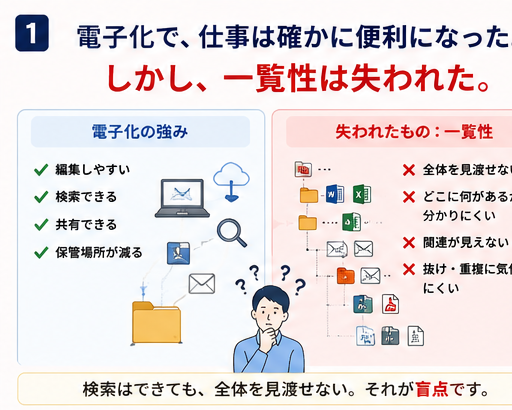
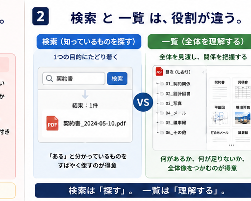
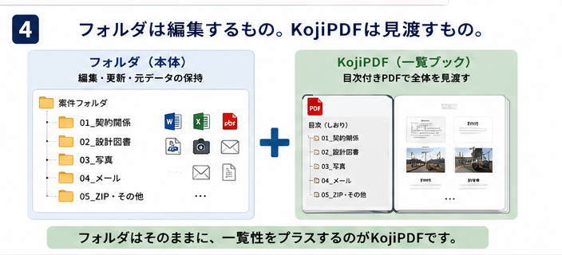
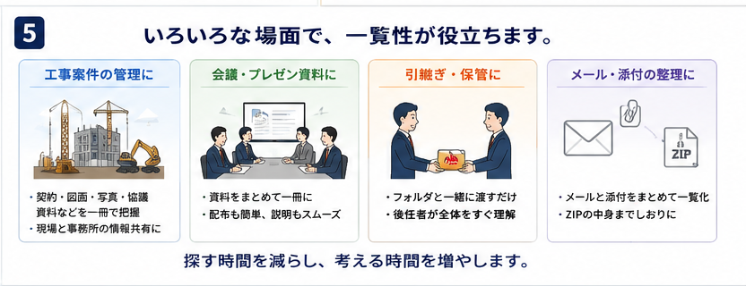
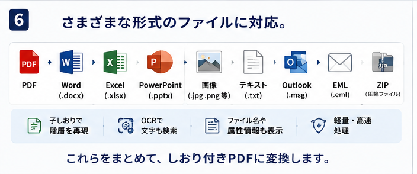
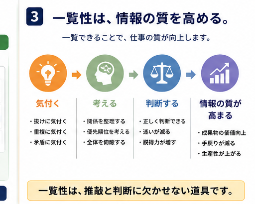
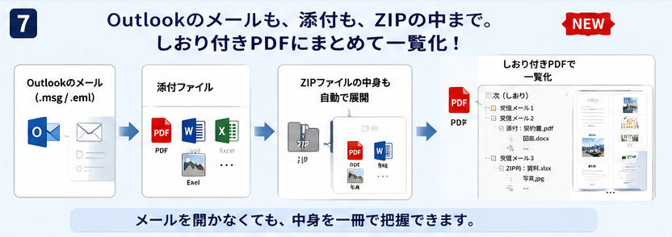

工事案件の管理
契約、図面、写真、協議資料を一冊で把握。
検索は、知っているものをすばやく見つける行為です。一覧は、知らなかった抜け、重複、関係性に気付くための見方です。


元のWord、Excel、PDF、写真、メール、ZIPはそのまま保管できます。
ファイル名と階層をしおりにして、一冊のPDFとして見渡せます。
フォルダだけでは弱かった一覧性を、KojiPDFが補います。

契約、図面、写真、協議資料を一冊で把握。
配布も説明も、ひとつの流れでスムーズに。
フォルダごと渡すだけで、後任者が全体を理解。
メール、添付、ZIPの中身まで一冊で確認。

機能は主役ではありません。ですが、一覧性を取り戻すために必要な形式をまとめて扱えます。



Code4Constructは、「あったらいいな」を形にするオープンな活動です。まずは一つの案件フォルダで、一覧できる感覚を試してください。